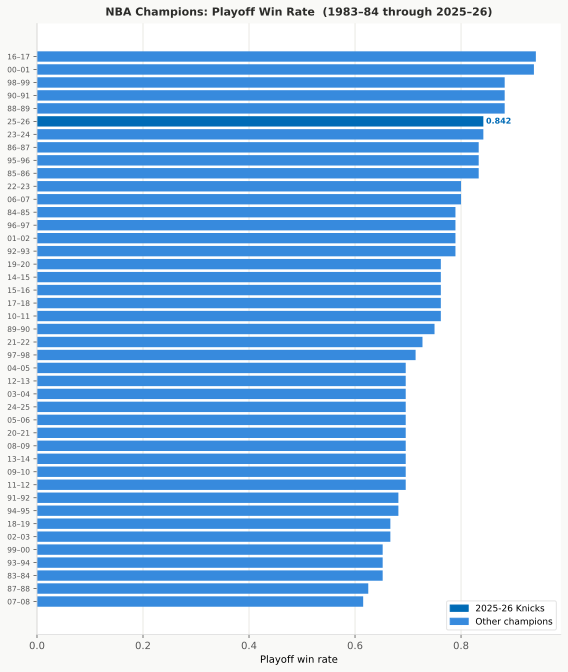
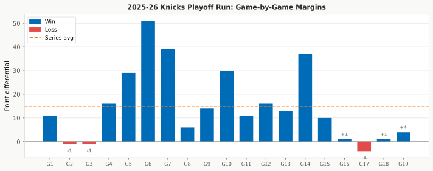
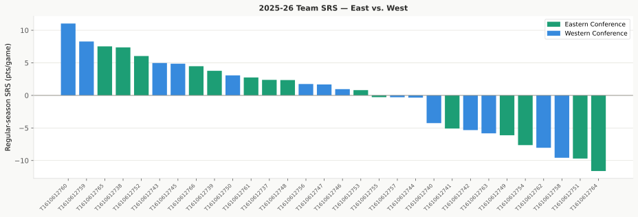
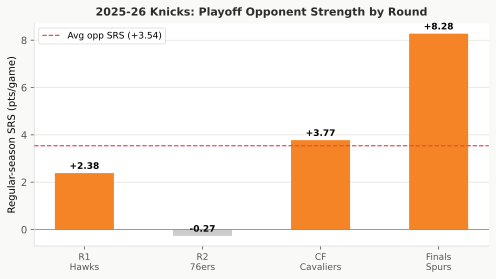
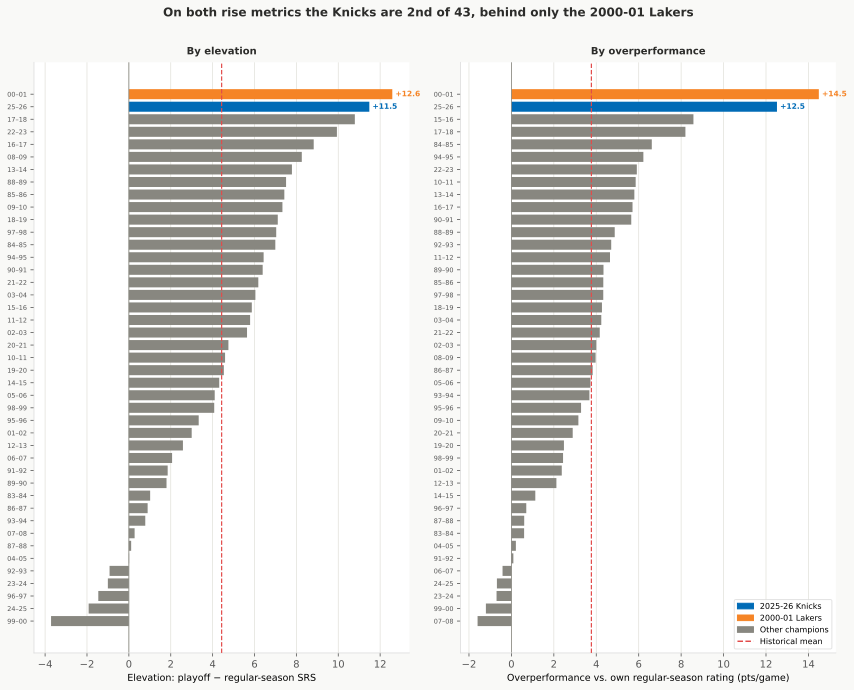
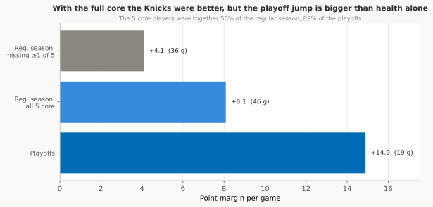
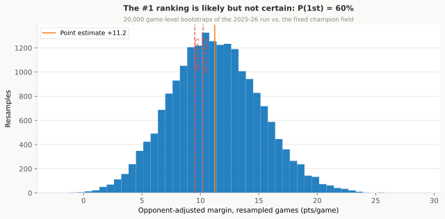
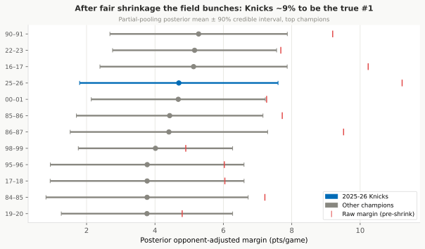
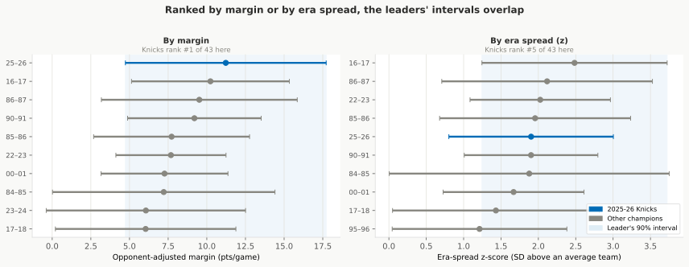

Did the 2026 Knicks Have a Historic Playoff Run?
The 2025–26 New York Knicks in Context
Draft
1. The Verdict (Up Front)
Yes: the 2025–26 New York Knicks had a historically dominant playoff run.
They went 16-3 (88th percentile win rate among all 43 champions since 1983–84) and outscored opponents by an average of +14.9 points per game, the highest raw playoff margin in the dataset. Even at the unlucky end of a 19-game run’s swing (the game-to-game bounce puts the margin anywhere from +7.4 to +22.4), the run still ranks above the historical average.
Four questions run through the report:
- Was the run actually dominant, or the product of a weak field?
- Did the Knicks earn it, or coast in on a soft, injured bracket?
- How does it rank against every champion since 1983–84, and how solid is that rank?
- How unlikely was a title run from where the Knicks started?
Start with the objections a reader walks in with:
- A weak East? No. The West–East gap in team strength (SRS, a team’s scoring margin adjusted for schedule) was only +0.39 pts/game (37th percentile of West dominance); in 63% of seasons since 1984 the West led by more.
- A soft bracket? No. The games-weighted opponent rating was +3.67 (49th percentile), the median champion’s schedule.
- Padded by garbage-time blowouts? No. On a wins-only rating that never sees a point margin, the Knicks still rank first of 43 (§11).
- Injured opponents? No. All four were essentially fully healthy against the Knicks (98% availability; the Spurs and Hawks at 100%).
They earned it by rising, not coasting. Only the fifth-strongest team in the playoff field during the regular season, the Knicks jumped to the top in the postseason: a rise of +11.48, the biggest of any 2026 playoff team and the 2nd-biggest any champion has produced. The team they beat in the Finals made the second-biggest jump in the field: the Spurs climbed from a regular-season SRS of +8.28 to +15.13 in the playoffs. That is part of why the Finals were the hardest test of the run, a 4-1 series won by an average of just +2.4 against the one opponent playing above its regular-season level (§5–§6).
How solid is the #1 claim? After adjusting for opponent strength, the Knicks’ margin of +11.2 pts/game ranks first among all 43 champions: the best single number any champion has posted. Whether it makes them the single best is a different question, and the answer is not quite. Nineteen playoff games is a small sample: re-drawing the run at random still leaves the Knicks the most likely #1, in about 60% of replays, but a fairer test that lets every champion carry the same uncertainty drops that to about 9% (§10). Graded against how top-heavy today’s league has become, they come out a top-five run rather than a clear first (§14). So: the best raw opponent-adjusted number in 43 years, very likely one of the best handful of title runs ever, but not provably the single best.

2. The Raw Numbers: Two Sweeps and a Tight Finals
The Knicks went 16-3 in the 2026 playoffs. Among all 43 champions in the data (1983–84 through 2025–26):
- Win rate: 88th percentile. They won 84% of their playoff games; the typical champion wins 75%, and the best, the 2016–17 Warriors, won 94%.
- Average margin: 100th percentile. +14.9 pts/game, best in 43 years.
Round-by-round (SRS = team quality relative to schedule; higher = stronger):
| Round | Opponent | Record | Avg Margin |
|---|---|---|---|
| First Round | Atlanta Hawks (SRS +2.38) | 4-2 | +17.5 |
| Second Round | Philadelphia 76ers (SRS -0.27) | 4-0 | +22.2 |
| Conference Finals | Cleveland Cavaliers (SRS +3.77) | 4-0 | +19.2 |
| NBA Finals | San Antonio Spurs (SRS +8.28) | 4-1 | +2.4 |
The two sweeps, against Cleveland (SRS +3.77, the strongest East opponent the Knicks drew) and Philadelphia (SRS -0.27), drove the record margin. The Finals were tight: four of the five games were decided by 4 points or fewer.



3. Was the East Weak?
No, not historically. The West-East SRS gap in 2025–26 was only +0.39 pts/game: 37th percentile of West dominance, and well within the normal season-to-season swing. The East inter-conference win rate was 0.487 (near parity). By any formal measure, the East in 2025–26 was unremarkable (if anything, slightly more competitive than the historical average).
The three most West-dominant seasons on record were 2013–14 (+4.08), 2003–04 (+3.73), and 2000–01 (+3.11), all much larger gaps.
Opponent SRS context: The games-weighted average SRS of the Knicks’ playoff opponents was +3.67 (49th percentile among all 43 champions), essentially at the historical median. The schedule was not unusually easy or hard.


4. Opponent-Adjusted Dominance
Even after adjusting for who they played, the Knicks’ margin is still the best of any champion: +11.2 points a game. That figure is the raw margin minus games-weighted opponent SRS. (Opponent SRS is weighted by games played in each series, so a 5-game Finals opponent counts for 5 of 19 data points rather than 1 of 4.)
| Metric | 2025–26 Knicks | Historical rank |
|---|---|---|
| Raw avg margin | +14.9 pts/game | 1st (100th pct) |
| Opp SRS (games-weighted) | +3.67 pts/game | 49th pct |
| Adjusted margin | +11.2 pts/game | 1st (100th pct) |
Top 5 adjusted-margin champions:
| Season | Raw | Opp SRS | Adj |
|---|---|---|---|
| 2025–26 Knicks | +14.9 | +3.67 | +11.2 |
| 2016–17 Warriors | +13.7 | +3.41 | +10.2 |
| 1986–87 Lakers | +10.8 | +1.32 | +9.5 |
| 1990–91 Bulls | +11.7 | +2.51 | +9.2 |
| 1985–86 Celtics | +10.6 | +2.83 | +7.7 |
All 43 champion seasons are included. For pre-1997 seasons where nba_api returns null PLUS_MINUS, margins are derived from PTS (both team rows per game).
Playoff overperformance, comparing actual margins to what the Knicks’ own regular-season SRS (+6.05) would predict against those opponents (+2.38 expected per game), gives +12.5 pts/game of outperformance, 2nd all-time (98th pct) behind only the 2000–01 Lakers. Their playoff SRS was +17.53, an elevation of +11.48 above their regular-season SRS, also 2nd all-time among champions (and the biggest jump in the 2026 field; see §6). The Knicks didn’t just face the right opponents: they played far above their regular-season level.


5. Was the East Weak in the Playoffs?
The regular-season SRS numbers say no (§3). But a sharper question is whether the East teams the Knicks beat in rounds 1–3 actually played weaker in the playoffs than their regular-season ratings suggested, and whether the tight Finals was because the Spurs were truly the better team in May–June.
The rounds 1–3 answer is a weak maybe; the Finals answer is a clearer yes: the Spurs were the toughest opponent of the run, playing well above their regular-season level.
Each opponent’s playoff SRS is computed from their games excluding the Knicks series, so it’s an independent measure of their form against other opponents. The Hawks had no independent playoff games (they only played the Knicks), so they’re excluded from this adjustment.
| Round | Opponent | Raw | Reg-SRS Adj | Playoff-SRS Adj |
|---|---|---|---|---|
| R1 | Hawks | +17.5 | +15.1 | n/a (no independent data) |
| R2 | 76ers | +22.2 | +22.5 | +23.7 |
| CF | Cavaliers | +19.2 | +15.5 | +16.9 |
| Finals | Spurs | +2.4 | −5.9 | −12.1 |
The 76ers and Cavaliers rated a touch below their regular-season marks in their pre-Knicks games (−1.2 and −1.5 pts). Read those two lightly: each rests on only a handful of independent playoff games, so a gap that small is as likely to be the random bounce of a short schedule as a real dip. The Spurs are the firmer finding, because their number comes from a full West bracket: a regular-season SRS of +8.28 but +14.48 in the playoffs, a +6.2 jump (excluding the Finals; §6 reports +6.85 including it) and the largest of any Knicks opponent this postseason. The Knicks beat a team playing well above its own regular-season level.
Net result: Adjusting the full run for opponents’ actual playoff performance (excluding the Knicks series) gives a margin of +9.1 pts/game, narrowly the best on record (the 1986–87 Lakers are +9.0, so the top spot here is effectively a tie). The Knicks beat East opponents who were at or a bit below their season-long form, then beat the best-performing team they faced.

6. The Rise: Biggest in the Field, 2nd-Biggest Ever
The Knicks did not reach the Finals as a polished regular-season team that simply held form. By team rating (SRS, quality adjusted for schedule), they were only the fifth-strongest team in the playoff field during the regular season, at +6.05 (the table below lists notable risers, not the full regular-season order). In the playoffs they jumped to +17.53. That rise of +11.48 was the largest of any team in the 2026 playoffs.
The team they beat in the Finals made the second-biggest jump. The Spurs were a stronger regular-season team than the Knicks, +8.28, second only to Oklahoma City (+11.04) among playoff teams. They climbed to +15.13 in the playoffs, a rise of +6.85. The Spurs entered the Finals both very good to begin with and getting better, which is part of why the series was close. (This +15.13 covers all of their playoff games, including the Finals against the Knicks, so it sits a little above the +14.48 in §5, which leaves the Knicks series out to judge the Spurs independently.)
| Team | Reg-season rating | Playoff rating | Jump |
|---|---|---|---|
| New York Knicks | +6.05 | +17.53 | +11.48 |
| San Antonio Spurs | +8.28 | +15.13 | +6.85 |
| Portland Trail Blazers | -0.28 | +2.73 | +3.01 |
| Oklahoma City Thunder | +11.04 | +11.42 | +0.38 |
The regular-season rating leader, Oklahoma City (+11.04), barely changed in the playoffs (+0.38) and finished well behind both finalists. And the Finals paired the two teams that had improved the most since October: the field’s two hottest teams, not its two best regular-season teams.
These playoff ratings rest on a few weeks of games, so the exact figures carry the same small-sample caution as the rest of the run (see §10).

How historic was the rise? Set it against every champion since 1983-84, and two different yardsticks land on the same answer. The first, elevation, is the plain version: playoff rating minus regular-season rating. The Knicks’ jump of +11.48 (regular-season SRS +6.05 up to a playoff +17.53) ranks 2nd of 43, behind only the 00–01 Lakers (+12.58). The second, overperformance, asks the same thing after subtracting out the schedule: how far the Knicks’ actual playoff margin (+14.9) beat what their own regular-season rating predicted against the teams they drew (+2.38 per game). That +12.52-per-game outperformance also ranks 2nd, behind the same 00–01 Lakers. Two ways of measuring the rise, one verdict: the biggest in the 2026 field, and the second-biggest any champion has produced.

What the rise is made of. It is not spread evenly across the run. The first three rounds against the East were demolitions: raw margins of +17.5, +22.2, and +19.2. The Finals were a near-even fight (+2.4), and once the Spurs’ own playoff form is subtracted out, the Knicks actually came out behind on the scoreboard math (§5). So the historic rise rests on overwhelming a beatable conference, not on the championship round, which the one team that had risen nearly as far as the Knicks pushed to the hardest test of the run.
Is there anything behind the jump we can actually see? One thing shows up in who was on the floor. The Knicks’ core five (Karl-Anthony Towns, OG Anunoby, Josh Hart, Mikal Bridges, Jalen Brunson) were together for only 56% of the regular season, but 89% of the playoffs. With the full core healthy, their regular-season margin was +8.09; short-handed it dropped to +4.08, and the full-season figure (+6.33) is just the blend of the two. Some of the jump, then, is plain continuity: the playoffs were the longest healthy stretch the team had all year.

But health does not finish the story. Even at full strength in the regular season (+8.09), the Knicks were nowhere near their playoff margin (+14.9). A healthy roster lifts the realistic baseline a couple of points above the full-season number, no more; the rest of the jump is the possibly-fading early-round opponents (a weak maybe, per §5) and a genuine playoff step-up that the data here can measure but cannot pin to a cause. Pinning down why a team shoots or defends better for six weeks would take possession-level and shot-quality data this study does not carry, so the honest answer is that continuity is the one piece of the rise we can see, and it is only a piece.
7. Ordinary at Home, Untouchable on the Road
The Knicks have an unusual profile for a champion: merely decent in Madison Square Garden, and nearly unbeatable everywhere else. They also played more close games than a typical champion: 31.6% of their playoff games were decided by 5 points or fewer, the 84th percentile.
Home/away splits: - Home: 9 games, 77.8% win rate (23rd percentile vs. champions, relatively weak at home for a champion) - Away: 10 games, 90.0% win rate (98th percentile, better than all but one champion in 43 years)
8. What the Betting Market Said
Betting spreads price in public information about each game, so they are a useful outside benchmark for how good the Knicks looked at the time. The market’s view of the run:
Overall: 16-3 ATS (against the spread); their cover record exactly matches their win-loss record. They beat the spread by an average of +16.9 pts/game across 19 games. Beating the market in 16 of 19 tries is well beyond a coin flip. Two cautions keep that from being as strong as it looks. First, those 19 games are really four series, and games inside a series move together (same opponent, same kind of pricing miss), so they are not 19 independent bets: adjust for that and the effective sample is closer to seven, leaving the result weaker but still better than chance. Second, ATS margin is just the final margin minus a near-zero spread, so this is not separate proof of dominance, it is mostly the same scoreline told from the bookmaker’s side. The signal comes entirely from the first three rounds: 14-0 against the spread vs. East opponents, with the Finals exactly dead-on (covered 2 of 5).
The two halves are very different:
| Round | Opponent | Avg Spread | Avg Actual | ATS Margin | Cover |
|---|---|---|---|---|---|
| R1 | Hawks | Knicks -4.0 | +17.5 | +21.5 | 6/6 |
| R2 | 76ers | Knicks -4.0 | +22.2 | +26.2 | 4/4 |
| CF | Cavaliers | Knicks -2.8 | +19.2 | +22.0 | 4/4 |
| Finals | Spurs | NYK +2.5 | +2.4 | −0.1 | 2/5 |
Against the three East opponents, the Knicks exceeded market expectations by roughly 21 to 26 points per round. The market priced them as modest favorites (-3 to -4) and they won by roughly 17 to 22. Against the Spurs in the Finals, the market had them as slight underdogs (+2.5) and they won by an average of exactly +2.4, essentially a coin-flip that they won 4-1 in games.

9. Opponent Health (No Injury Asterisk)
One recurring question about dominant playoff runs is whether key opposing players were injured. The answer here: no, they weren’t.
Using player-level game logs to measure how many of each opponent’s rotation players (averaging ≥15 min/game across the playoffs) appeared in each game of the Knicks’ series:
| Round | Opponent | Health |
|---|---|---|
| R1 | Atlanta Hawks | 100% |
| R2 | Philadelphia 76ers | 96% |
| CF | Cleveland Cavaliers | 97% |
| Finals | San Antonio Spurs | 100% |
Average across all four opponents: 98%. The Spurs, the most dangerous team and the one that gave the Knicks the tightest series, were fully intact. The close Finals margin (+2.4 avg) reflects genuine competition, not a depleted opponent. This removes the injury asterisk often attached to dominant runs.

10. How Solid Is the #1 Ranking?
The “best opponent-adjusted margin of any champion” claim rests on a 19-game run, and 19 games is a small sample. To see how solid the top spot is, we re-played the run 20,000 times by re-drawing its 19 games at random and re-ranked the result against the other 42 champions each time.
The Knicks finish #1 in about 60% of those re-runs, in the top three in 70%, and in the top five in 82%. Their single most likely finish is #1, but across re-draws the rank ranges from 1st to roughly 11th, and the opponent-adjusted margin itself lands anywhere from +5.1 to +17.7 (best estimate +11.2).
A 19-game number that stands out partly stands out by luck, so we pulled the Knicks’ adjusted margin back toward what championship runs normally look like (the other 42 champions average about +3 per game). Because playoff margins swing so much, 19 games only pin down about 40% of the estimate; the rest gets pulled toward the pack. That pulled-back margin lands at +6.5 per game, with a plausible range of roughly +1.5 to +11.5. Even after that haircut it still clears about 83% of champions.
This second test is deliberately tough on the Knicks, but it is also unfair in their favor: it pulls only the Knicks back toward the average while leaving every other champion frozen at its exact career number.
We also checked whether not knowing the opponents’ exact strength matters: the opponent ratings come from full regular seasons, and re-running the re-draws while jostling each opponent’s rating by roughly how uncertain it is barely moves the result (the #1 chance stays at about 59%). The wobble in this ranking is almost entirely the shortness of a 19-game run, not doubt about who the Knicks played.

The fairest test treats every champion as uncertain, and it pulls the #1 claim down. The checks above froze the other 42 champions at their exact numbers. But those numbers are noisy too: a champion that looks like +10 might truly be +7 or +13. When we pull every champion’s number back toward the historical average based on how shaky it is, and then let all 43 compete while weighing everyone’s uncertainty at once, the Knicks come out as the single best only about 9% of the time. They land in the top three about 23% of the time and the top five about 34%; their most likely spot is near the bottom of the top ten, with a range that runs from 1st to deep in the pack.
The gap between 60% and 9% comes from two factors. The Knicks’ run was streaky: the two sweeps came by +22.2 and +19.2 next to a +2.4 Finals. A run that swings between blowouts and close games is harder to trust than a steady one, so this test pulls the margin back harder than the simple version above did: from +11.2 down to about +4.7, rather than the +6.5 of the second check (which pulled toward a looser, noise-inflated benchmark). And several rivals, the 1990-91 Bulls, the 2022-23 Nuggets, the 2016-17 Warriors, were nearly as dominant on steadier evidence, so once everyone’s wobble is in play they overtake the Knicks often.
The bottom line across these checks: the 2025-26 Knicks own the best raw opponent-adjusted number of any champion, and they are very likely one of the best handful of title runs ever, but the data cannot crown them the single best. Their chance of being the true #1 runs from roughly 60% (with the rest of history left at its exact numbers) down to about 9% (the fairest test, where every champion is allowed to be as uncertain as the Knicks).

11. A Second Opinion: Other Rating Systems
Every opponent adjustment so far leans on one rating, SRS, which grades teams by their season-long scoring margins. If the Knicks’ #1 hinges on that single choice, it is shaky. So we re-ran the whole opponent adjustment with three very different ratings and checked whether the answer held.
Wins-only rating. This system is fit from nothing but who beat whom; it never sees a single point margin. That makes it the cleanest test of one worry, that the Knicks’ record margins are padded by garbage-time blowouts. They are not: on a pure wins-only basis the Knicks’ opponent-adjusted dominance still ranks first of 43, and it rates their schedule almost exactly as SRS does. Stripping margins out entirely does not knock them off the top, so the dominance is real, not a scoreboard illusion.
Blowout-capped rating. A middle option keeps margins but caps each game at 15 points, so a 40-point rout counts no more than a 15-point win when rating a team’s schedule. That bounds the damage any single lopsided game can do. It barely moves the verdict: the Knicks’ capped-margin dominance is +11.93 per game, still first of 43, and across all 43 champions the capped and full-margin rankings track in near-lockstep. So the schedule strength is not the work of a few blowouts either.
Elo (recency-weighted). Elo, the running rating popularized by FiveThirtyEight, is also margin-based but weights recent games more heavily. It rated the Knicks’ opponents tougher than SRS did, because the teams New York drew were playing well down the stretch (Elo pegs the Spurs at +10.7 points above average, against SRS’s +8.3). A tougher-rated schedule means a bigger adjustment, so the Knicks’ Elo-adjusted margin is +9.4 per game, third-best, behind the 2016-17 Warriors and 1990-91 Bulls.
All four systems rank the Knicks in the top three, and across champions their adjusted margins track closely together. Among the rating systems, the one thing that moves the Knicks off #1 is not switching from margins to wins, or capping blowouts, it is crediting opponents for late-season form: on full-season opponent quality the Knicks are first, and only when recent form is weighted heavily do they slip to third.

12. How Unlikely Was a 16-3 Run?
One last way to gauge the run: forget what happened and ask what the Knicks’ regular season predicted. We built a simple forecaster that knows only each team’s regular-season strength and who had home court, turns every game into a win chance, and plays out the four best-of-seven rounds tens of thousands of times.
The forecast was not kind. Because the Spurs out-rated the Knicks over the regular season, the model made New York a Finals underdog (about a 31% chance to win that series) and gave them only about a 15% chance to win the title at all. This forecast follows only the Knicks’ actual bracket, not the whole field: the strongest regular-season team was Oklahoma City Thunder (+11.04 SRS, ahead of the Spurs’ +8.28), but the Thunder lost before the Finals, so the Spurs are the only rival the model ever weighs. Run the whole bracket forward instead (Appendix C) and the Thunder are a runaway title favorite at 54.5%, while the Knicks, seeded 3rd in the East behind Detroit and Boston, were just 3.5% before a game was played. A run as clean as 16-3, losing just three games across four rounds, was rarer still: only about 7% of the model’s championship runs were that tidy, and barely 1% of all simulated seasons produced both a title and three or fewer losses.
Almost nothing about the Knicks’ regular season predicted this. They were “supposed” to lose around six or seven games on the way to a title they were not even favored to win; they lost three and were seriously tested only in the Finals. (The exact percentages shift a little under a different assumed game-to-game swing, but the size of the overperformance does not.)

13. What Does NOT Diminish the Run
A 16-3 record raises familiar objections: the conference was weak, the bracket was soft, the opponents were hurt, the scoreboard was padded. Each was tested; the data does not support any of them.
| Objection | Verdict | Where |
|---|---|---|
| The East was historically weak | No. The West–East rating gap was +0.39 pts/game (37th percentile of West dominance); the West led by more in 63% of seasons since 1984. | §3 |
| The bracket was soft | No. Games-weighted opponent rating was +3.67 (49th percentile), the median champion’s schedule. | §3–§4 |
| The early-round teams were fading | A little, at the edges. The 76ers and Cavaliers rated ~1.2–1.5 pts below their season form, but on a handful of games each; the Spurs went the other way and rose +6.2. Adjusting the run for opponents’ actual playoff form still leaves it at +9.1, narrowly best on record. | §5 |
| The margins are garbage-time padding | No. On a wins-only rating that never sees a point margin, the Knicks still rank first of 43. | §11 |
| The high-scoring era inflated the margin | Mostly no. The scoring is better shooting, not a faster game; per possession both the raw and adjusted margins stay first. Only the harsher scoring-share adjustment drops the raw margin to 3rd. | §14 |
| An opponent was injured | No. Opponents were 98% healthy on average; the Spurs and Hawks were at 100%. | §9 |
Two things genuinely temper the claim, and neither is on this list. One is the shortness of a 19-game run: when every champion is allowed the same uncertainty, the Knicks are the single best only about 9% of the time (§10). The other is the yardstick: grade the margin against how top-heavy today’s league is, or weight opponents by their late-season form, and the run reads as top-five rather than a clear first (§11, §14).
Each objection is treated in full, with why it seemed plausible and exactly what the data showed, in the companion document The Investigation (Appendix A).
14. Comparing Across Eras: How Much of #1 Survives?
“The most dominant champion in 43 years” is only as solid as the yardstick behind it, and basketball has no single one. Comparing a 2025-26 team to a 1986-87 team means choosing what to hold equal: the schedule, the scoring level, the pace, or how top-heavy the league was. Each choice gives a different answer, so the clearest way through is to lay them side by side.
First, the scoring level. 2025-26 has the most points per game in the dataset (115.6 vs. a historical mean of 103.5), which looks like a reason to discount the margin. But high scoring is not the same as a fast game, and the two pull in opposite directions. Scale margins by total points (the scoring-share adjustment, a deliberately harsh take that treats the whole scoring boom as inflation) and the raw margin slips from 1st to 3rd (+13.3, behind the 2000-01 Lakers and 2016-17 Warriors). Scale instead by estimated possessions, which separate pace from shooting, and 2025-26 ran only about 4% faster than average (101.8 possessions vs. 98.0): the extra points are better three-point shooting, not more trips down the floor. Per possession the Knicks’ raw margin (+14.6) and opponent-adjusted margin (+11.0) both stay 1st. So the level of scoring, however you handle it, does not knock the opponent-adjusted run off the top.
Then, the spread. This is the adjustment that does. Today’s league is far more top-heavy than the 1980s: the spread of team strength has nearly doubled since 1984, with the typical distance of a team from the league average growing from about 3.1 to 5.9 points. A given margin is a smaller achievement when many teams are extreme than when the league is bunched together. Grade each champion against its own era’s spread, measuring how far above an average team it stood relative to how spread out that season’s teams were, and the Knicks come in 5th, standing +1.90 times that era’s typical team-to-team gap clear of an average team. The 2016-17 Warriors lead at +2.48, the 1986-87 Lakers and 2022-23 Nuggets just behind: smaller margins in raw points, but towering over flatter fields.
Stacking the lenses tells the whole story at a glance:
| How you measure dominance | What it holds equal | Knicks rank |
|---|---|---|
| Raw scoring margin | nothing | 1st of 43 |
| Opponent-adjusted | strength of schedule | 1st |
| + scoring-share (still opponent-adjusted) | the era’s scoring level | 1st (the raw margin alone, with no opponent adjustment, slips to 3rd) |
| + per possession | the era’s pace | 1st |
| + graded on the era’s spread | how top-heavy the league was | 5th |
| Recency-weighted opponents (Elo) | schedule, weighting late form | 3rd |
The pattern is clean. Every absolute measure, biggest margin, toughest-adjusted margin, per-possession margin, puts the 2025-26 Knicks first. The two lenses that move them, grading on the era’s spread (5th) and weighting opponents by recent form (Elo, 3rd, from §11), are both relative ones: they ask not “how big was the margin” but “how far clear of this particular league did they stand.” Against a deeper, more spread-out field than any champion before them faced, the answer is a top-five run rather than a clear-cut first. Neither reading is wrong. They answer different questions, and an honest “most dominant ever” has to say which one it means.

Read the bars, not the order. Whichever metric sets the ranking, the leaders’ intervals sit on top of one another: the ordering is real, but the distance between the top few is not something 19 games can resolve.
15. Limitations
Small sample and ranking uncertainty: 19 playoff games produce a wide range on the margin (+7.4 to +22.4). The comparison set is also only 43 champions. Several of the metrics here (adjusted margin, overperformance, elevation) all measure closely related things; treat them as different angles on one story, not independent votes. §10 puts numbers on how solid the #1 rank is; that uncertainty, together with the choice of yardstick in §14, is what keeps first place from being settled, not any objection in §13.
Opponent SRS for the reg-season-adjusted metrics is from regular-season performance. For the playoff-adjusted metrics (§5), each opponent’s playoff SRS is computed from games excluding the Knicks series to avoid circularity; the Hawks had no such games and are excluded from that adjustment.
Era comparisons rest on the choices in §14: the spread-standardized ranking divides the playoff-era margin by a regular-season spread, a defensible but not unique construction, and the exact order shifts a little with it. The direction is robust, since the spread nearly doubled, but the precise rank (about 5th) is not a settled figure.
Pre-1997 data: PLUS_MINUS is null in the older NBA.com data. We derive it from PTS (both team rows per game), which is algebraically exact for game margins but may differ if box-score point totals differ from game records.
16. Methodology
All analysis uses Python (pandas, numpy). Data from NBA.com via nba_api (LeagueGameFinder for game logs, LeagueStandingsV3 for standings). SRS (Simple Rating System) gives each team a single strength number by fitting the expected margins between teams to the actual game results across the full season, then scaling so all teams average to zero.
See the Regression Results companion (Appendix A) for full numerical output and knicks_2026_analysis.py for all computation.
Appendix A: Companion Documents
| Document | Description |
|---|---|
| Regression Results | Full numerical output from the analysis pipeline: every ranking, percentile, and adjusted figure behind this report. |
| The Investigation | Full treatment of every objection to the run: why each seemed plausible, what was tested, and how much it actually explains away. |
| One-Page Summary | Standalone summary built around three charts and four questions. |
| Stats Explainer | Guide to the statistical methods behind each analysis, written for a reader who knows some statistics. |
| Comparing Teams Across Eras | Standalone one-page field guide to the cross-era comparison techniques (the two axes and what each produces), using the Knicks as the worked example. |
| Findings Outline | Condensed section-by-section outline cross-referenced to the regression output. |
Appendix B: Every Champion, Opponent-and-Scoring-Adjusted
The headline rankings throughout this report quote percentiles and the top few names. Here is the full list: all 43 champions since 1983-84, ranked by the opponent-adjusted margin of §4 scaled to a common scoring level (the scoring-share lens of §14, its deliberately harsh take on the era). Each score is points per game above an average team, after stripping out strength of schedule and then scaling to a common scoring environment so a 2025-26 margin and a 2000-01 margin sit on one ruler. The first three columns trace the adjustment: Raw is the plain scoring margin, Opp-adj removes the schedule, Opp+Scoring also levels the era’s scoring. The last two take a different route to the same era problem: Spread Z grades each opponent-adjusted margin against how spread out team strength was that season (§14), and Spread Rank is where that order places the champion.
Click any column header to re-sort the table by it; click again to reverse.
| # | Season | Champion | Raw | Opp-adj | Opp+Scoring | Spread Z | Spread Rank |
|---|---|---|---|---|---|---|---|
| 1 | 25–26 | New York Knicks | +14.89 | +11.23 | +10.05 | +1.90 | 5 |
| 2 | 16–17 | Golden State Warriors | +13.65 | +10.23 | +10.04 | +2.48 | 1 |
| 3 | 86–87 | Los Angeles Lakers | +10.83 | +9.52 | +8.96 | +2.12 | 2 |
| 4 | 90–91 | Chicago Bulls | +11.71 | +9.20 | +8.96 | +1.90 | 6 |
| 5 | 00–01 | Los Angeles Lakers | +12.75 | +7.26 | +7.93 | +1.67 | 8 |
| 6 | 85–86 | Boston Celtics | +10.56 | +7.72 | +7.25 | +1.96 | 4 |
| 7 | 22–23 | Denver Nuggets | +8.30 | +7.68 | +6.93 | +2.03 | 3 |
| 8 | 84–85 | Los Angeles Lakers | +10.16 | +7.21 | +6.74 | +1.88 | 7 |
| 9 | 95–96 | Chicago Bulls | +10.56 | +6.03 | +6.27 | +1.21 | 10 |
| 10 | 17–18 | Golden State Warriors | +10.00 | +6.04 | +5.88 | +1.43 | 9 |
| 11 | 98–99 | San Antonio Spurs | +7.24 | +4.90 | +5.54 | +1.15 | 11 |
| 12 | 23–24 | Boston Celtics | +8.05 | +6.06 | +5.49 | +1.15 | 12 |
| 13 | 13–14 | San Antonio Spurs | +9.30 | +4.82 | +4.94 | +1.03 | 13 |
| 14 | 14–15 | Golden State Warriors | +7.81 | +4.48 | +4.64 | +0.95 | 15 |
| 15 | 19–20 | Los Angeles Lakers | +6.86 | +4.80 | +4.44 | +1.01 | 14 |
| 16 | 24–25 | Oklahoma City Thunder | +8.35 | +4.68 | +4.25 | +0.82 | 19 |
| 17 | 89–90 | Detroit Pistons | +7.00 | +4.25 | +4.12 | +0.92 | 16 |
| 18 | 11–12 | Miami Heat | +7.09 | +3.81 | +4.10 | +0.82 | 20 |
| 19 | 88–89 | Detroit Pistons | +7.71 | +4.26 | +4.04 | +0.81 | 21 |
| 20 | 12–13 | Miami Heat | +6.43 | +3.71 | +3.92 | +0.84 | 18 |
| 21 | 03–04 | Detroit Pistons | +6.35 | +3.44 | +3.82 | +0.87 | 17 |
| 22 | 08–09 | Los Angeles Lakers | +7.22 | +3.35 | +3.47 | +0.74 | 22 |
| 23 | 15–16 | Cleveland Cavaliers | +8.62 | +3.21 | +3.24 | +0.66 | 23 |
| 24 | 07–08 | Boston Celtics | +5.23 | +2.75 | +2.85 | +0.53 | 24 |
| 25 | 97–98 | Chicago Bulls | +7.00 | +2.42 | +2.62 | +0.46 | 26 |
| 26 | 91–92 | Chicago Bulls | +6.18 | +2.20 | +2.17 | +0.47 | 25 |
| 27 | 20–21 | Milwaukee Bucks | +5.13 | +1.80 | +1.66 | +0.39 | 28 |
| 28 | 02–03 | San Antonio Spurs | +5.50 | +1.35 | +1.47 | +0.33 | 29 |
| 29 | 83–84 | Boston Celtics | +4.17 | +1.42 | +1.34 | +0.46 | 27 |
| 30 | 10–11 | Dallas Mavericks | +5.76 | +1.26 | +1.31 | +0.28 | 30 |
| 31 | 18–19 | Toronto Raptors | +5.46 | +1.15 | +1.07 | +0.25 | 31 |
| 32 | 92–93 | Chicago Bulls | +5.84 | +0.79 | +0.77 | +0.17 | 32 |
| 33 | 04–05 | San Antonio Spurs | +4.35 | +0.65 | +0.69 | +0.16 | 33 |
| 34 | 21–22 | Golden State Warriors | +5.05 | +0.46 | +0.43 | +0.10 | 34 |
| 35 | 05–06 | Miami Heat | +3.78 | +0.22 | +0.24 | +0.06 | 35 |
| 36 | 96–97 | Chicago Bulls | +5.74 | +0.04 | +0.04 | +0.01 | 36 |
| 37 | 06–07 | San Antonio Spurs | +3.90 | -0.13 | -0.14 | -0.04 | 37 |
| 38 | 09–10 | Los Angeles Lakers | +3.83 | -0.27 | -0.28 | -0.06 | 38 |
| 39 | 87–88 | Los Angeles Lakers | +2.54 | -0.33 | -0.32 | -0.07 | 39 |
| 40 | 93–94 | Houston Rockets | +3.13 | -1.61 | -1.64 | -0.32 | 40 |
| 41 | 01–02 | Los Angeles Lakers | +3.79 | -1.94 | -2.10 | -0.48 | 41 |
| 42 | 99–00 | Los Angeles Lakers | +2.39 | -2.42 | -2.58 | -0.54 | 42 |
| 43 | 94–95 | Houston Rockets | +2.77 | -2.99 | -3.06 | -0.64 | 43 |
Two things the full list makes plain. The adjustments reshuffle it: the 2000-01 Lakers climb because their margin came in a low-scoring era that scales up, while several teams with gaudy raw numbers slide once their schedules are subtracted out. And the bottom is mostly champions who won on a playoff run, not a dominant regular season: the 1999-2000 and 2001-02 Lakers and both mid-90s Rockets titles sit below zero, average-or-worse on paper before they caught fire in the spring, with a cluster of teams including the 2018-19 Raptors only just above the line. The Knicks and the 2016-17 Warriors sit a hair apart at the top, close enough to call a tie, which is the same verdict §10 reaches the harder way. The Spread Rank column tells the one story that breaks that tie against them: graded against how spread out their league was, the Knicks fall to 5th while the 2016-17 Warriors lead, the single adjustment in the table that unseats them (§14). Sort by Spread Z and the order pivots on era rather than margin. Champions who stood far clear of a tightly-bunched league rise: the 2022-23 Nuggets and 1985-86 Celtics, ordinary on raw points, climb past teams that outscored them. The ones that slide are the big-margin champions from spread-out eras, where a wider field makes the same gap count for less: the Knicks themselves, the 1990-91 Bulls, the 2000-01 Lakers. It is the mirror image of the schedule-and-pace reshuffle above, and why §14 treats the spread as the one lens that unseats the Knicks.
The scores form a bell curve, not a handful of runaway giants. The average champion sits at +3.29 points per game, and about 65% of them fall within one standard deviation (the typical spread of the scores) of that average. The spread is near-symmetric with no fat tail, and the scores pass a standard check for that bell shape (the details are in the Regression Results companion). That matters for reading the #1 claim: the Knicks’ top score sits about twice that typical spread above the average champion (+2.0 standard deviations), which is high but right where the single best of 43 bell-curve draws is expected to land. The best champion is the leading edge of an ordinary spread, not a breed apart, which is the statistical echo of §10’s conclusion that first place is real but not settled.
Appendix C: The Full-Field Title Odds
§12 measures the Knicks’ run along the path they actually drew. The companion question is who the field favored before any of it was played. This simulation seeds all 16 playoff teams into the bracket and plays every round forward from regular-season strength, the same game-by-game model as §12, so every team gets a title number instead of just the Knicks.
| # | Team | Conf | Seed | Reg SRS | Title % |
|---|---|---|---|---|---|
| 1 | Oklahoma City Thunder | West | 1 | +11.04 | 54.5% |
| 2 | San Antonio Spurs | West | 2 | +8.28 | 14.2% |
| 3 | Detroit Pistons | East | 1 | +7.53 | 13.5% |
| 4 | Boston Celtics | East | 2 | +7.37 | 10.8% |
| 5 | New York Knicks | East | 3 | +6.05 | 3.5% |
| 6 | Denver Nuggets | West | 3 | +4.97 | 1.2% |
| 7 | Houston Rockets | West | 5 | +4.87 | 1.0% |
| 8 | Cleveland Cavaliers | East | 4 | +3.77 | 0.7% |
| 9 | Toronto Raptors | East | 5 | +2.75 | 0.2% |
| 10 | Minnesota Timberwolves | West | 6 | +3.07 | 0.2% |
| 11 | Atlanta Hawks | East | 6 | +2.38 | 0.1% |
| 12 | Los Angeles Lakers | West | 4 | +1.68 | 0.0% |
| 13 | Phoenix Suns | West | 7 | +1.75 | 0.0% |
| 14 | Orlando Magic | East | 8 | +0.81 | 0.0% |
| 15 | Philadelphia 76ers | East | 7 | -0.27 | 0.0% |
| 16 | Portland Trail Blazers | West | 8 | -0.28 | 0.0% |
The Thunder were the runaway favorite at 54.5%, more than triple any other team, on the strength of the league’s best regular-season rating by a wide margin. The Knicks were only the 3rd seed in the East, behind Detroit and Boston, so the bracket handed them a hard expected road: just 3.5% to win it all. That is far below the 15% the realized-path model gave them in §12, and the gap is the draw, not their play. The East’s top two seeds were both upset before New York would have met them, so the teams the Knicks actually faced were softer than their seed line predicted. Neither number knows the Knicks would elevate in May, and both say the title was a long shot; the full-field view just says it was a longer one.
The same caveat as §12 applies: this rests on one assumed game-to-game swing and on regular-season ratings, nothing from the playoffs themselves. Widen or narrow that swing and the favorites bunch up or spread out, but the order is stable: Oklahoma City first by a wide margin, the Knicks a distant longshot.
Data: NBA.com via nba_api. The 2025–26 Knicks playoff run is ranked against historical playoff runs. See Appendix A for the companion documents, including the full analysis output (Regression Results).